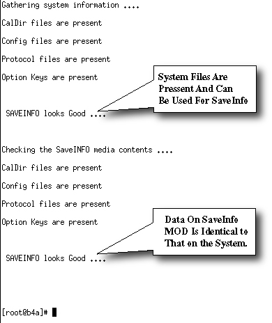

First, the program will ensure files on the host scanner, that are normally written to a SaveInfo DVD, are present and not corrupted. Next, it will check the saved information on DVD to match what is on the system. See Illustration 1 for an example of a successful check.
Illustration 1: Passed SaveInfo Check

If issues are noted with the SaveInfo data on the system disk, they must be corrected in order to successfully transfer data to the SaveInfo DVD. Potential causes for failures are excessive file size (greater than 40 mB) or “special characters” such as *(&$#@ in the character string that may have been used when customers created protocols.
If issues are found, a message displays informing the operator of files that need to be moved or fixed in order for the SaveInfo to properly archive to media (DVD). The system will list what files will need to be moved or fixed. Discuss these issues with the customer and attempt to fix the offending files or move them to a temporary directory before starting SaveInfo.
As an example, if the file /usr/g/protocol/site/head/noggin scan is reported corrupted and it is not possible to fix, you will need to move it.
Create a temporary directory: mkdir /usr/g/temp[Enter].
Move the file: mv /usr/g/protocol/site/head/noggin scan /usr/g/temp[Enter].
Perform a SaveInfo.